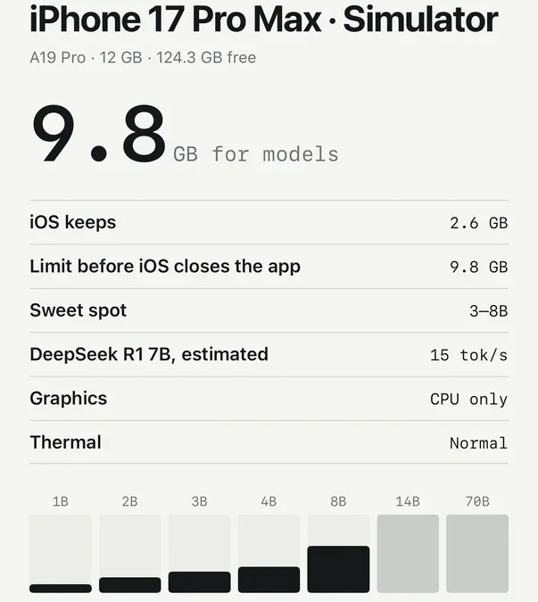
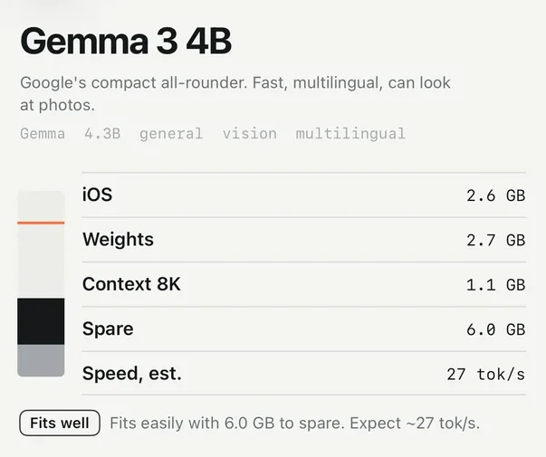
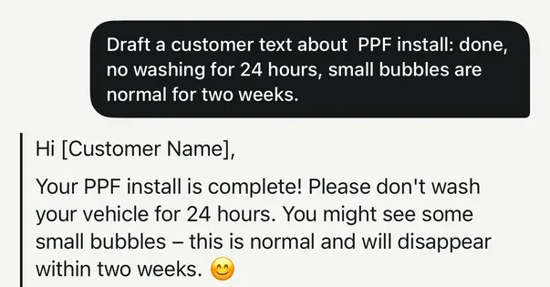
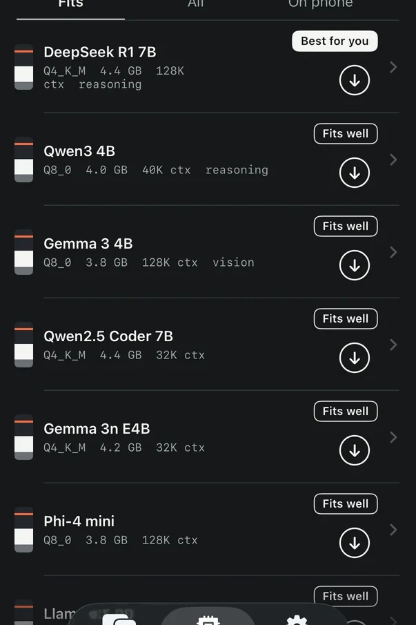
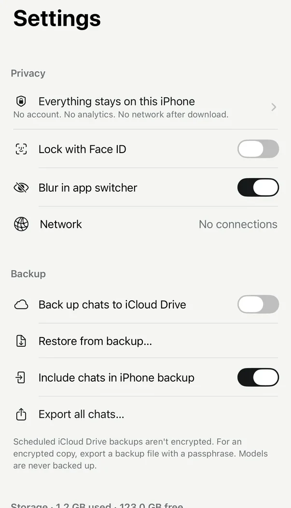

Never leavesyour phone.
QUIET Ai runs open AI models, uncensored ones included, on your iPhone's own chip. No account, no server, and it works in Airplane Mode.
What fits your iPhone
iPhones give each app a fixed share of memory. Pick yours and see which models stay under the limit, before you download 4 GB.
Black fits. Orange is tight. Grey will not load. The app measures your exact iPhone before every download.
Three steps, then offline
First, QUIET measures your iPhone.

Then you pick a model that fits.

Then you turn on Airplane Mode and ask.

The reply is written by the model on your phone and saved only there. No server ever sees it.
38 models, uncensored included
Nineteen are built into the app. The rest you add from Hugging Face in a minute: Dolphin, Hermes, and abliterated versions of Llama, Qwen, Gemma, Mistral, Phi and DeepSeek R1. Tap one to see which devices run it.

Offline is the privacy policy

We built QUIET Ai because we wanted an assistant we could ask anything without wondering who else was reading.
Cloud assistants refuse, lecture, and keep a log of what you ask. A model on your own phone does none of that. It has no account to tie you to and no server to send your words to.
That is also why QUIET runs uncensored models such as Dolphin and Hermes, and abliterated models with the refusals removed. An AI that answers you, on a device you own, is yours to use as an adult. The app is rated 18+.
Small models are not ChatGPT. They write, rewrite, summarize and explain well, and they can be wrong. We would rather tell you that here than have you find out later.
Essential Dev Team
Makers of QUIET Ai
One price.
Everything in it.
once, no subscription
Every model your device can run, voice, documents and iCloud backups. No account and no ads.
Download on the App StoreStraight answers
Which iPhone do I need?
Any iPhone running iOS 26. Small models (1–2B) run on every supported phone. 4B models want 6 GB of memory or more. 7–8B models are for 8–12 GB phones (iPhone 15 Pro and later). The app tells you exactly what fits before you download.
Is it really offline?
Yes. After a model is downloaded, turn on Airplane Mode and keep chatting. Every network request goes through one gate, and it only allows model downloads from Hugging Face, an optional catalog refresh, and the App Store.
Can I run uncensored models?
Yes. Add Dolphin, Hermes or an abliterated model from Hugging Face inside the app. QUIET checks that it fits your device first. The app is rated 18+, and you are responsible for how you use what a model writes.
How fast is it?
It depends on the model and the chip. A 4B model runs at roughly 25–30 tokens per second on an iPhone 17 Pro, faster than most people read. The app shows an estimate before download and the measured speed after every reply.
Is it as good as ChatGPT?
No. These are small models that fit in a phone. They are very good at writing, rewriting, summarizing, explaining and everyday questions, and reasoning models like DeepSeek R1 and Qwen3 handle math and logic well. They know less about recent events and can be wrong, like any AI.
What happens to my chats?
They live in the app's storage on your phone. They are included in your normal iPhone backup unless you turn that off, and you can export them as Markdown or JSON, or as an encrypted backup file.